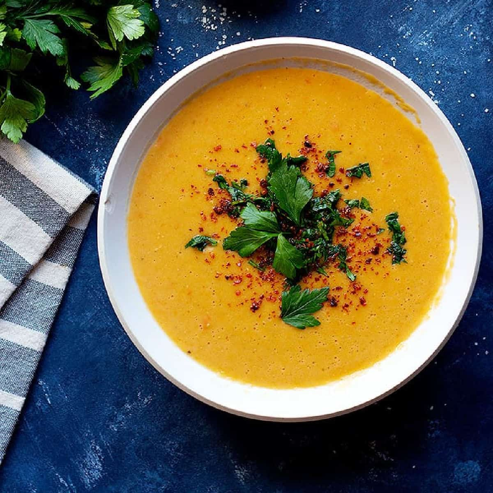

Turkish Red Lentil Soup

Description
There are actually a few stories about this soup, but I’ll start from the beginning.
My visit to Turkey just happened to fall during Ramadan, the Islamic month of fasting.
While there, I learned that many people break their fast at sunset with a traditional Turkish
lentil soup called Mercimek Çorbasi. It’s perfect for this purpose because it is high in
protein, warming to an empty stomach and satisfies so that you don’t gorge yourself after so
many hours of fasting.
Ingredients:
- 1 cup Red Lentils
- 5 Tbsp Olive Oil
- 1 Tbsp Paprika
- 1/2 Tbsp Red Paper Flakes
- 1 large Onion, finely diced
- 1 large Carrot, diced
- 4 tsp Tomato Paste
- 2 tsp Cumin
- 1/2 tsp Dried Mint
- 1/2 tsp Thyme or Oregano
- 4 cup Vegetable Broth
- 4 cup Water
Steps:
- Reserve half the paprika and red pepper flakes, set aside.
- Pick through lentils for any foreign debris, rinse two or three times, drain and set aside.
- In a large pot over medium-high heat, saute 2 Tbsp of the olive oil and and onion with a pinch of salt for 3 minutes.
- Add the carrots and saute for another 3 minutes.
- Add the tomato paste and stir it around for 1 minute.
Add cumin, mint, thyme, and the paprika/pepper flakes not reserved - and saute for 10 seconds to bloom the spices.
Immediately add the lentils, water, broth, and salt. Bring the soup to a boil.
- Once boiling, reduce heat to a medium, cover the pot halfway, and cook for 15-20 minutes or until
the lentils have fallen apart and the carrots are fully softened.
- Meanwhile, heat the remaining olive oil in a small sauce pan over medium heat, and swirl in the reserved paprika and red
pepper flakes. The moment you see the paprika start to bubble, remove the pan from the heat.
- Blend the soup to reach the desired consistency. Taste for seasoning.
- Divide soup into bowls and drizzle the paprika oil on top of each serving.